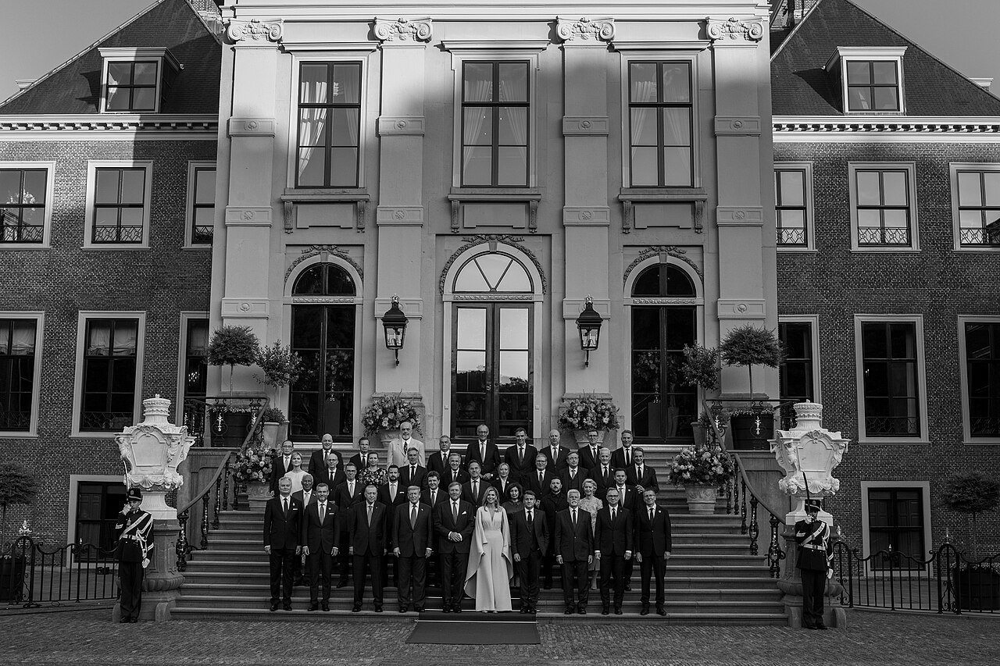
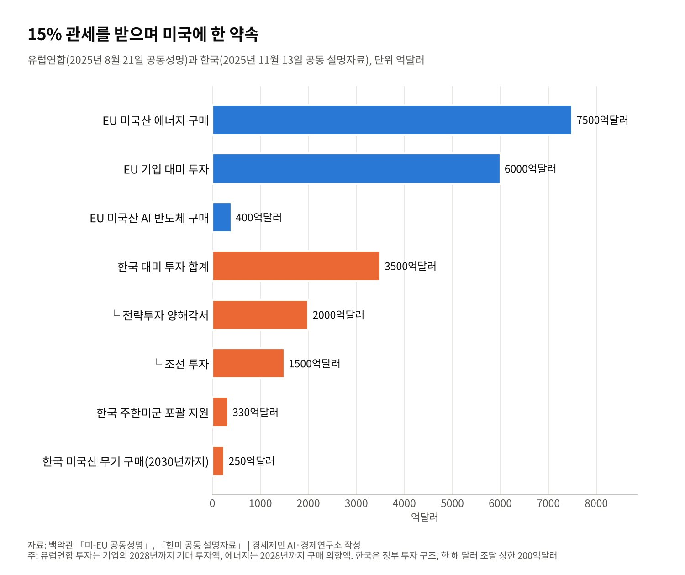
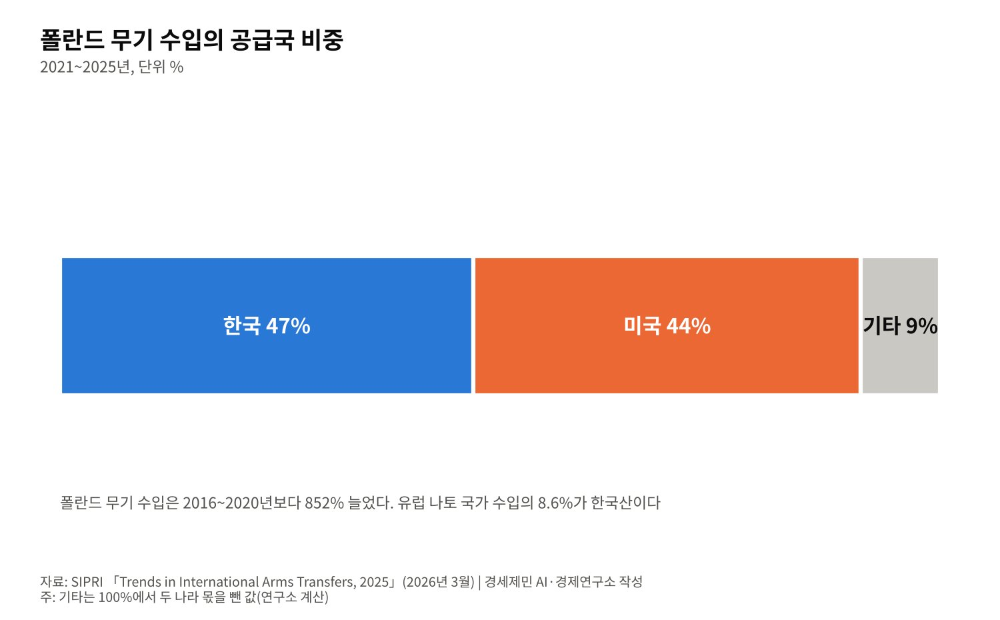

[정상외교] 같은 동맹 같은 청구서, 유럽이 한국의 대미 협상을 지켜본 이유
관세 15%에 한국은 3500억달러, 유럽연합은 6000억달러 투자와 7500억달러 에너지 구매
폴란드 무기 수입의 47%가 한국산, 이재명 대통령 6월 브뤼셀·7월 앙카라 나토 회의 참석
세 차례 한미 정상회담 뒤에도 투자·전작권·핵추진잠수함 이행은 더뎌
2025년 8월 25일 백악관에서 첫 한미정상회담이 열렸다. 유럽과 중동 매체도 이 회담을 비중 있게 다뤘다. 유로뉴스는 트럼프 대통령이 미군기지 땅의 소유권을 갖고 싶다고 한 발언을 전했다.
카타르의 알자지라는 트럼프 대통령이 김정은 국무위원장을 「언젠가 보길 고대한다」고 한 말을 제목에 올렸다. 만리 밖 매체가 한반도 회담에 주목한 까닭은 그들의 처지에 있었다.
그로부터 1년 2개월이 흘렀다. 유럽이 한국을 지켜본 이유는 더 분명해졌다. 같은 15% 관세, 같은 국방비 청구서를 받았고 유럽의 무기고는 한국산으로 채워지고 있다. 각국 정부 문서와 국제기구 자료로 짚는다.

1. 같은 15%, 다른 계산서
유럽연합과 미국은 2025년 8월 21일 공동성명을 냈다. 미국은 유럽산 상품에 최혜국 관세와 15% 가운데 높은 쪽을 매긴다. 유럽연합은 2028년까지 미국산 에너지 7500억달러어치를 사들일 의향을 밝혔다.
유럽 기업은 2028년까지 미국 전략 부문에 6000억달러를 더 투자할 것으로 기대된다고 적었다. 미국산 인공지능 반도체를 400억달러어치 이상 산다는 계획도 들어갔다. 미국산 무기 구매도 크게 늘리기로 했다.
한국의 약속은 백악관이 2025년 11월 13일 낸 한미 공동 설명자료(조인트 팩트시트)에 담겼다. 상호관세와 자동차 관세는 15%다. 미국이 승인한 조선 투자 1500억달러와 전략투자 양해각서 2000억달러를 더해 3500억달러다.
두 약속의 결은 다르다. 유럽연합 문서의 6000억달러는 기업이 투자할 것으로 「기대되는」 금액이다. 한국 문서는 정부가 책임지는 투자 구조를 짜고, 한 해 달러 조달 상한을 200억달러로 묶었다.
원화가 불안해지면 한국이 조정을 요청할 수 있고, 미국은 이를 성실히 고려한다는 문구도 넣었다. 같은 15%를 받으려고 유럽은 넓고 느슨하게, 한국은 좁고 단단하게 약속했다. 유럽이 한국의 계산서를 들여다본 이유다.

2. 같은 국방비 청구서, 5%와 3.5%
나토는 2025년 6월 25일 헤이그 정상회의 선언에서 2035년까지 국방에 국내총생산의 5%를 쓰기로 했다. 핵심 국방에 최소 3.5%, 기반시설·사이버·방위산업 기반 같은 관련 지출에 최대 1.5%를 쓴다.
한국도 비슷한 숫자를 받았다. 공동 설명자료와 제57차 한미안보협의회의(SCM) 공동성명은 한국이 국방비를 「가능한 한 빨리」 국내총생산의 3.5%로 늘릴 계획이라고 적었다. 미국 의회조사국은 2025년 한국 국방비를 국내총생산의 2.3%로 봤다.
유럽은 이미 돈을 쓰기 시작했다. 스톡홀름국제평화연구소(SIPRI)에 따르면 2025년 유럽 군사비는 1년 전보다 14% 늘어 8640억달러다. 독일은 24% 늘어난 1140억달러로 1990년 뒤 처음 국내총생산의 2%를 넘었다.
폴란드는 국내총생산의 4.5%를 써 나토 회원국 가운데 부담이 가장 크다. 같은 해 한국 군사비는 2.6% 늘어난 478억달러다. 지출 증가율만 보면 유럽이 한국보다 훨씬 빠르다.
3. 유럽 무기고를 채우는 한국
유럽이 한국을 보는 눈은 실용적이다. SIPRI 무기이전 자료를 보면 유럽 국가의 무기 수입은 2016~2020년보다 2021~2025년에 210% 늘었다. 유럽 나토 29개국의 수입도 143% 늘었다.
이 시장에서 한국은 세계 9위 수출국이다. 한국의 2021~2025년 무기 수출은 앞선 5년보다 24% 늘었다. 유럽 나토 국가 무기 수입의 8.6%를 한국이 댔다.
가장 큰 손님은 폴란드다. 폴란드의 무기 수입은 앞선 5년의 9배를 넘었고 그 47%가 한국산이다. 미국산 44%보다 많다. 미국 동맹국이 다른 미국 동맹국에서 무기를 사는 그림이 유럽 동쪽에서 그려지고 있다.

트럼프 행정부가 유럽에 미국산 무기 구매를 요구할수록 유럽은 공급처를 고민한다. 미국 무기만 사면 미국 의존이 깊어지고, 유럽산만으로는 물량과 납기가 모자란다. 한국은 그 틈을 메우는 세 번째 선택지다.
4. 브뤼셀과 앙카라, 한국이 직접 간 자리
이재명 대통령은 2026년 6월 10일 브뤼셀에서 제11차 한-유럽연합 정상회의를 열었다. 안토니우 코스타 유럽이사회 상임의장, 우르줄라 폰데어라이엔 유럽연합 집행위원장이 마주 앉았다.
공동성명은 안보·국방 동반자관계를 이행하는 첫걸음을 반겼다. 비밀정보를 주고받는 정보보호협정 협상을 시작하기로 했다. 러시아와 북한의 불법 군사협력을 규탄하고 즉시 멈추라고 요구했다. 디지털통상협정 서명도 「획기적 성과」로 적었다.
한 달 뒤인 7월 7~8일에는 튀르키예 앙카라 나토 정상회의에 갔다. 미국 연구기관 씨엔에이(CNA)는 인도태평양 4개국(IP4) 정상 가운데 이 대통령만 직접 참석했다고 분석했다. 정상선언은 중국을 거론하지 않았고, 러시아를 「장기적 위협」으로 규정했다.
브뤼셀자유대학 안보외교전략센터의 라몬 파체코 파르도 한국석좌는 2025년 9월 1일 글에서 첫 회담이 서울과 워싱턴의 건설적 관계를 열었다고 봤다. 다만 전략적 유연성, 방위비, 3500억달러 세부사항은 실무 협상으로 넘어갔다고 짚었다.
5. 중동의 시선, 호르무즈로 옮겨 오다
2025년 중동 매체의 관심은 북한이었다. 알자지라는 8월 27일 조선중앙통신 논평을 전했다. 북한은 이 대통령의 비핵화 발언을 「궤변」으로, 핵보유를 「불가피한 선택」으로 규정했다.
2026년에는 중동의 전쟁이 한국으로 건너왔다. 미국과 이란의 전쟁으로 호르무즈 해협에 한국 선박이 발이 묶였고, 미국은 동맹국에 해협 안전에 기여하라고 요구했다. 한국 정부는 청해부대 작전구역을 오만만까지 넓히는 방안을 검토하고 있다.
이 대통령은 9월 기자회견에서 전쟁에 군 병력과 자산을 보내지 않는다고 못 박았다. 대신 한국 선박과 원유 수송, 국민 보호에 청해부대 역할을 키우는 쪽을 살핀다. 국방부는 확대가 미국 요청에 대한 응답이 아니라고 설명한다.
6. 세 번의 회담 뒤 남은 숙제
두 정상은 2025년 10월 29일 경주, 2026년 9월 22일 뉴욕에서 다시 만났다. 위성락 국가안보실장은 뉴욕 회담을 세 번째 회담으로 꼽았다. 전시작전통제권 전환이 처음 정상급 의제에 올랐다. 대미 투자 첫 사업으로 텍사스 가스발전소를 골랐다는 보도도 나왔다.
이행은 더디다. 미셸 스틸 주한 미국대사는 10월 21일 한미관계가 「난기류」를 지나고 있다고 말했다. 원자력·조선·대미 투자 합의의 진척이 느리고, 쿠팡에 대한 법적 조사와 전작권 전환 시기를 두고 이견이 있다고 했다.
유럽과 한국은 같은 질문 앞에 서 있다. 동맹의 약속을 숫자로 바꿀 때 얼마를, 어떤 조건으로 내줄 것인가다. 유럽은 넓은 약속으로 시간을 벌었고, 한국은 상한을 둔 약속으로 위험을 묶었다. 어느 쪽이 나았는지는 이행의 속도가 답할 것이다.
참고문헌
기관 자료
- The White House, "Joint Fact Sheet on President Donald J. Trump's Meeting with President Lee Jae Myung", 2025년 11월 13일. https://www.whitehouse.gov/fact-sheets/2025/11/joint-fact-sheet-on-president-donald-j-trumps-meeting-with-president-lee-jae-myung/
- The White House, "Joint Statement on a United States-European Union Framework on an Agreement on Reciprocal, Fair, and Balanced Trade", 2025년 8월 21일. https://www.whitehouse.gov/briefings-statements/2025/08/joint-statement-on-a-united-states-european-union-framework-on-an-agreement-on-reciprocal-fair-and-balanced-trade/
- NATO, "The Hague Summit Declaration", 2025년 6월 25일. https://www.nato.int/cps/en/natohq/official_texts_236705.htm
- U.S. Department of War·대한민국 국방부, "57th Security Consultative Meeting Joint Communique", 2025년 11월 14일. https://media.defense.gov/2025/Nov/14/2003820640/-1/-1/1/57-SECURITY-CONSULTATIVE-MEETING-JOINT-COMMUNIQUE.PDF
- European External Action Service, "Joint Statement following the 11th European Union – Republic of Korea Summit", 2026년 6월 10일. https://eeas.europa.eu/delegations/south-korea/joint-statement-following-11th-european-union-%E2%80%93-republic-korea-summit_en
- Congressional Research Service, "The August 2025 U.S.-South Korea Summit"(IN12603), 2025년 9월 3일. https://www.everycrsreport.com/reports/IN12603.html
연구 논문과 보고서
- SIPRI, "Trends in World Military Expenditure, 2025"(Fact Sheet), 2026년 4월. https://www.sipri.org/publications/2026/sipri-fact-sheets/trends-world-military-expenditure-2025
- SIPRI, "Trends in International Arms Transfers, 2025"(Fact Sheet), 2026년 3월. https://www.sipri.org/publications/2026/sipri-fact-sheets/trends-international-arms-transfers-2025
- CNA, "NATO's Ankara Summit: The Indo-Pacific Dimensions", 2026년 8월 30일. https://www.cna.org/analyses/2026/08/natos-ankara-summit-the-indo-pacific-dimensions
- Ramon Pacheco Pardo, "Lee Jae-myung's Summits in the United States and Japan", CSDS(브뤼셀자유대학), 2025년 9월 1일. https://csds.vub.be/?p=9892
언론 보도
- Euronews, "Donald Trump says he hopes to meet North Korean leader Kim Jong-un 'this year'", 2025년 8월 26일. https://euronews.com/2025/08/26/donald-trump-says-he-hopes-to-meet-north-korean-leader-kim-jong-un-as-soon-as-this-year
- Al Jazeera, "Trump to South Korea's Lee: 'I look forward' to meeting North Korea's Kim", 2025년 8월 26일. https://www.aljazeera.com/news/2025/8/26/trump-to-south-koreas-lee-look-forward-to-meeting-n-koreas-kim-jong-un
- Al Jazeera, "North Korea blasts South Korea's Lee as 'confrontation maniac'", 2025년 8월 27일. https://www.aljazeera.com/news/2025/8/27/north-korea-blasts-south-koreas-lee-as-confrontation-maniac
- The Korea Times(연합뉴스), "Trump reaffirms commitment to dialogue with N. Korea during summit with Lee: Seoul", 2026년 9월 23일. https://www.koreatimes.co.kr/foreignaffairs/20260923/trump-reaffirms-commitment-to-dialogue-with-n-korea-during-summit-with-lee-seoul
- Seoul Economic Daily, "Lee, Trump Hold Surprise Summit in New York", 2026년 9월 24일. https://en.sedaily.com/politics/2026/09/24/lee-trump-hold-surprise-summit-in-new-york
- The Korea Times, Bahk Eun-ji, "Seoul weighs expanding Cheonghae Unit operations toward Strait of Hormuz", 2026년 10월 16일. https://www.koreatimes.co.kr/southkorea/defense/20261016/seoul-weighs-expanding-cheonghae-unit-operations-toward-strait-of-hormuz
- 경향신문 영문판, "Trump holds a 30-minute call with President Lee", 2026년 5월 18일. https://www.khan.co.kr/en/article/202605180734027
- The Korea Times(연합뉴스), "Top US envoy cites 'turbulence' in S. Korea-US alliance amid rift in security, trade priorities", 2026년 10월 21일. https://www.koreatimes.co.kr/foreignaffairs/20261021/top-us-envoy-cites-turbulence-in-s-korea-us-alliance-amid-rift-in-security-trade-priorities
[사진 출처]
- [사진1] The White House, "President Donald Trump participates in a family photo for the 2025 NATO Summit at the Huis ten Bosch Palace in The Hague P20250624DT-0424.jpg", 위키미디어 공용, 퍼블릭 도메인. https://commons.wikimedia.org/wiki/File:President_Donald_Trump_participates_in_a_family_photo_for_the_2025_NATO_Summit_at_the_Huis_ten_Bosch_Palace_in_The_Hague_P20250624DT-0424.jpg
※ 이 기사는 AI 프로그램 클로드를 활용해 작성했습니다.
관련기사
- [정상외교] 한미정상회담 해외언론 다시 읽기, 1년 뒤 남은 것과 사라진 것
- [정상외교] 2차 한중정상회담 아홉 달, 서해에서 옮겨진 것과 남은 것
- [정상외교] 한중 하늘길 7년 만에 넓혔지만 자유화는 20년째 시범, 비자가 먼저 열린 이유
- [동맹과 국방] 군사력 세계 5위 한국, 자주국방은 어디까지 왔고 동맹은 무엇을 요구하나
저작권자 © AI경세제민 무단전재 및 재배포, AI학습 및 활용 금지